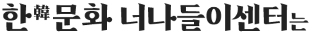
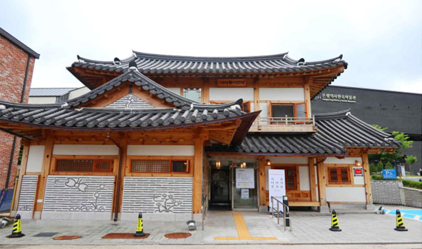
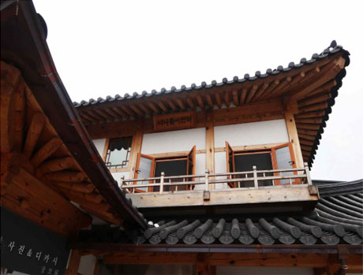
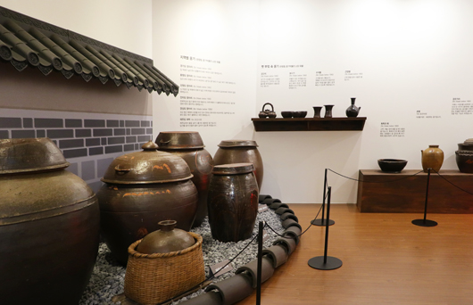
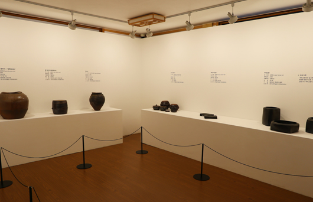
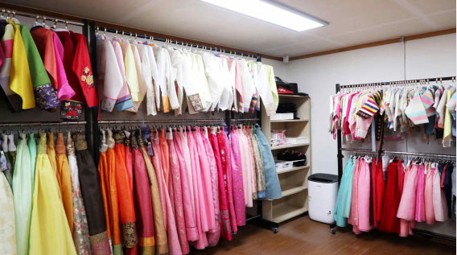
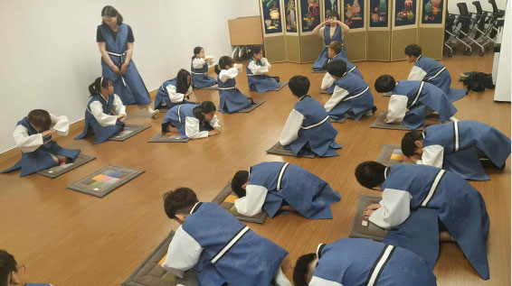
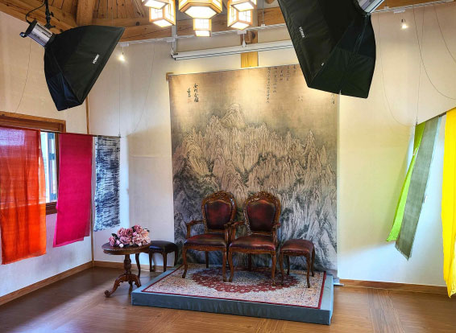

은평역사한옥박물관 입구에 위치한 너나들이센터는 ‘은평 북한산 한문화체험특구’를 알리고, 은평한옥마을에 대한 이해를 돕기 위해 2018년 4월에
개관하였습니다. 다양한 한문화를 관람할 수 있는 소규모의 기획전시실[지상 1층]을 비롯하여, 종류별 한복 대여가 가능한 한복 체험실[지하 1층]과
교육프로그램을 체험할 수 있는 교육실[지하 1층], 한문화를 배경으로 사진을 찍을 수 있는 사진촬영실[지상 2층]을 갖춘 복합문화공간으로
은평구민뿐만 아니라 누구라도 찾아오시는 분들 모두가 즐길 수 있도록 무료로 운영되고 있는 한문화체험시설입니다
지상 1층 기획전시실
기획전시실은 다양한 한문화 관련 테마 전시를 수시로 교체 · 전시하여 한문화체험시설 방문객의 꾸준한 관심을 유도하는 공간으로, 전시는 한문화 관련 테마 뿐만 아니라 은평구의 과거로부터 현재와 미래를 아우르는 작품까지 망라하고 있습니다. 또한, 은평역사한옥박물관에서 진행하는 행사와 연계하여 독립적으로 특별전이나 기획전을 운영하고 있으며, 다양한 연계 교육프로그램을 진행하여, 관람객들로 하여금 전시를 더 쉽게 이해할 수 있는 기회를 제공하고 있습니다


지하 1층 한복 체험실
한복 체험실은 남·여 종류별 한복, 독립운동가 의상, 성균관 유생복 등 다양한 종류의 한복과 장신구를 무료로 대여할 수 있는 공간으로 전통의 한복을 직접 입어보는 경험을 통해 보다 더 한문화에 가까워질 수 있는 기회의 장을 마련하고 있습니다.

예약 및 문의 전화 : 02-351-4433
지하 1층 교육실
지하 1층에 위치한 교육실은 자체 문화 강좌를 비롯, 기획 전시와 연계된 명사들의 강연, 한문화 예절 교육 등 다양한 교육을 통해 관람객들의 한문화에 대한 보다 폭넓은 이해를 돕고, 이와 관련된 각종 회의, 세미나 등을 진행할 수 있는 공간입니다

지상2층 사진촬영실
지상 2층에 위치한 사진촬영실은 "금강전도", "3·1절 태극기" 등 테마별 한문화를 배경으로 개인적인 사진을 촬영할 수 있는 장소로, 찾아오신 관람객들이 오랫동안 기억에 남는 한문화와의 소중한 추억을 간직하고 떠날 수 있는 기회를 제공하고 있습니다.
